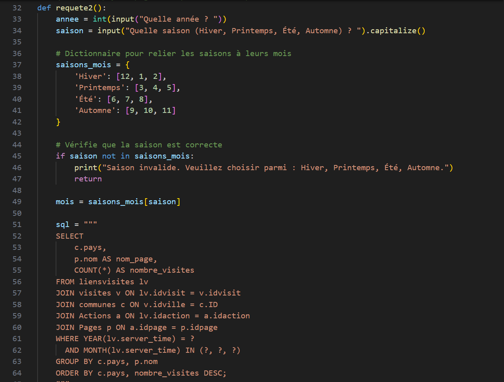
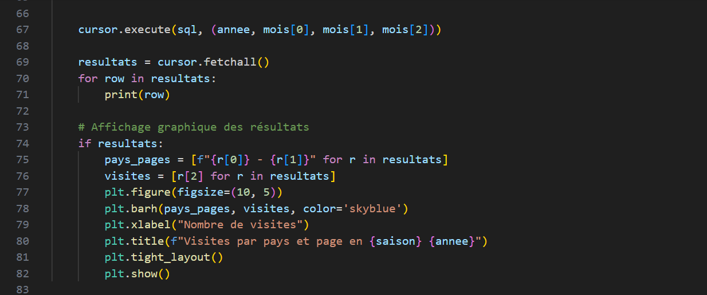

Project 3: Web Data Analysis with Python
This project analyzes website traffic data using Python, SQL, and data visualization tools like Matplotlib.
Description
The application connects to a database using ODBC and runs several SQL queries based on user input.
It allows users to:
- Get the most visited page for a specific country and year
- Display most active countries and pages by season
- View unique visits per activity (hiking, climbing, skiing, etc.)
Results are shown in the console and visualized using Matplotlib charts.
Technologies Used
Python
SQL
ODBC
Matplotlib
Challenges
- Establishing a stable ODBC connection using DSN
- Dynamically building SQL queries based on user choices
- Creating clean visualizations with Matplotlib
- Handling invalid user input (wrong season, incorrect options, etc.)
Example of a fonction using a SQL query

